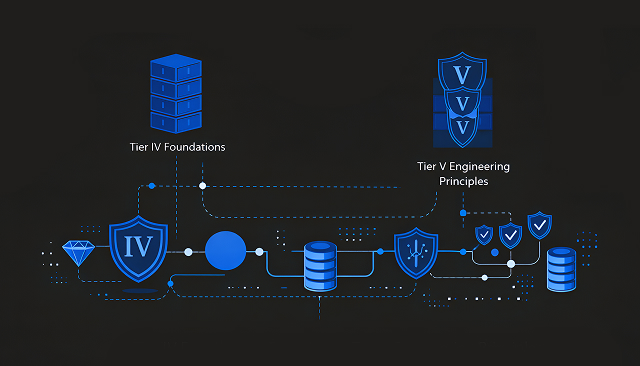

Middle East Data Centers.
Sovereign Infrastructure Engineered for Control, Compliance, and Continuity.

Infrastructure Where Sovereignty Is a Technical Requirement.
In the Middle East, infrastructure decisions are inseparable from sovereignty, jurisdiction, and operational control.Failures are rarely caused by lack of compute or bandwidth—they occur when data crosses borders unintentionally, when control is delegated to opaque platforms, or when resilience depends on external jurisdictions.
Crafthost’s Middle East data center footprint is engineered to provide explicit control, deterministic performance, and enforceable data residency—without sacrificing availability or scale.

This is not regional hosting by convenience. It is sovereign-grade infrastructure by architectural design.
Primary Middle East Coverage Regions.
Each region is deployed as an independent sovereign fault domain, with no hidden dependency on external jurisdictions for power, network, or control planes.
Crafthost operates a focused Middle East footprint designed for regulatory certainty and regional performance:
— regional hub for finance, government, energy, and multinational enterprises.
— strategic gateway between Europe, the Middle East, and Africa.
Designed for Regulated and Mission-Critical Environments.
Middle East workloads often operate under national regulations, sector mandates, and cross-border constraints that commodity clouds are not designed to respect.
Crafthost’s architecture supports:
- Explicit data residency enforcement
- Jurisdiction-aware traffic routing
- Controlled access models for sensitive workloads
- Predictable behavior under geopolitical and operational stress
Infrastructure behavior remains verifiable, auditable, and enforceable.
Tier IV Foundations with Tier V Engineering Discipline.
Middle East facilities are built on Tier IV-aligned infrastructure, extended through Tier V engineering principles to address regional realities:

Tier IV defines availability.Tier V ensures availability under real-world conditions, including heat, power volatility, and regional traffic surges.
Who This Middle East Infrastructure Is Designed For.
- Enforceable data sovereignty
- Deterministic performance under regulatory constraints
- Infrastructure-level control and auditability
- Regional resilience without dependency on foreign jurisdictions
- Government and public-sector entities
- Financial institutions and payment platforms
- Energy and critical infrastructure operators
- Enterprises running regulated or sensitive workloads
What This Architecture Deliberately Avoids.
Crafthost’s Asia-Pacific infrastructure is not designed for:
- Best-effort regional hosting
- Aggressive oversubscription models
- Shared failure domains across countries
- SLA-only availability without architectural enforcement
If low-cost regional hosting without performance guarantees is the objective, this platform is intentionally not optimized for that use case.